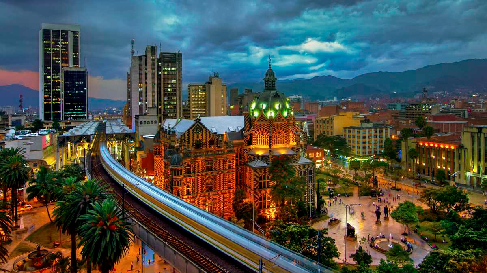

Medellín es la capital de la provincia montañosa de Antioquia en Colombia. Es apodada la "Ciudad de la eterna primavera" por su clima templado y alberga la famosa Feria de las Flores anual. El moderno Metrocable conecta la ciudad con los barrios circundantes y tiene vistas del Valle de Aburrá que se encuentra debajo. Las esculturas de Fernando Botero decoran la Plaza Botero en el centro de la ciudad, mientras que el Museo de Antioquia exhibe más obras del artista colombiano.
Al encontrarse en la parte central del Valle de Aburrá, Medellín tiene principalmente con un clima subtropical húmedo. Medellín se caracteriza por un clima agradable, ni mucho calor, ni mucho frío, con temperaturas promedio que van de los 16 a los 26 grados centígrados.